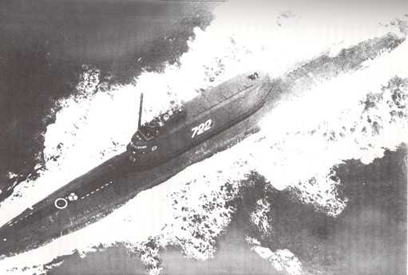
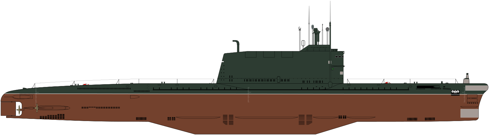

K-129
Б-103, К-129 - советская дизель-электрическая подводная лодка проекта 629А.
Основное вооружение
ракетный комплекс Д-4 с тремя баллистическими ракетами Р-21 в ограждении рубки (первая советская БРПЛ
подводного старта). Входила в состав Тихоокеанского флота СССР. Командир капитан первого ранга В.И Кобзарь.

Подводная лодка. Номера меняли перед каждым походом
Затонула приблизительно 7-8 марта 1968 года в северной части Тихого океана, в точке с координатами 40°06*
с. Ш. 179°57' з. д. HG0, на глубине порядка 5600 м. Погиб весь экипаж в составе 98 человек.
12 августа 1974 года в результате секретной операции Цру
«Проект
Азориан»
, при помощи специально
сконструированного оборудования (корабль «Гломар Эксплорер» и спецдок с устройством подводного захвата
корпуса лодки), была поднята носовая часть подводной лодки.

Гольф 2
схема
В массовой культуре
- В документальном сериале «Жизнь после людей» в одной из серий
рассказывается об останках подлодки K-129 и баллистических ракетах Р-21, которые не были подняты на поверхность американцами. Через 25
лет после исчезновения человечества корпус ракет проржавеет, и туда проникнет вода, что вызовет
химические реакции с литием и приведёт к мощному взрыву. Несмотря на
то, что толща воды погасит
ударную волну, от радиации может умереть мгновенно всё живое в радиусе одного километра.
- В документальном сериале «Равновесие страха. Война, которая осталась холодной» подробно рассказано о
походе K-129, операции по её
подъему и похоронах 6 членов
экипажа, которых удалось найти.
- В фантастическом романе Чарльза Стросса «Дженнифер Морг» из цикла
«Досье Прачечной» на подводной
лодке находилась новейшая на тот момент оккультная технология СССР. В ходе операции «Дженнифер»
подлодку не удалось поднять со дна, потому что это нарушало дипломатическое соглашение с Глубинными,
которым угрожало использование данной теднологии, и они отломили большую часть при попытке подьёма.